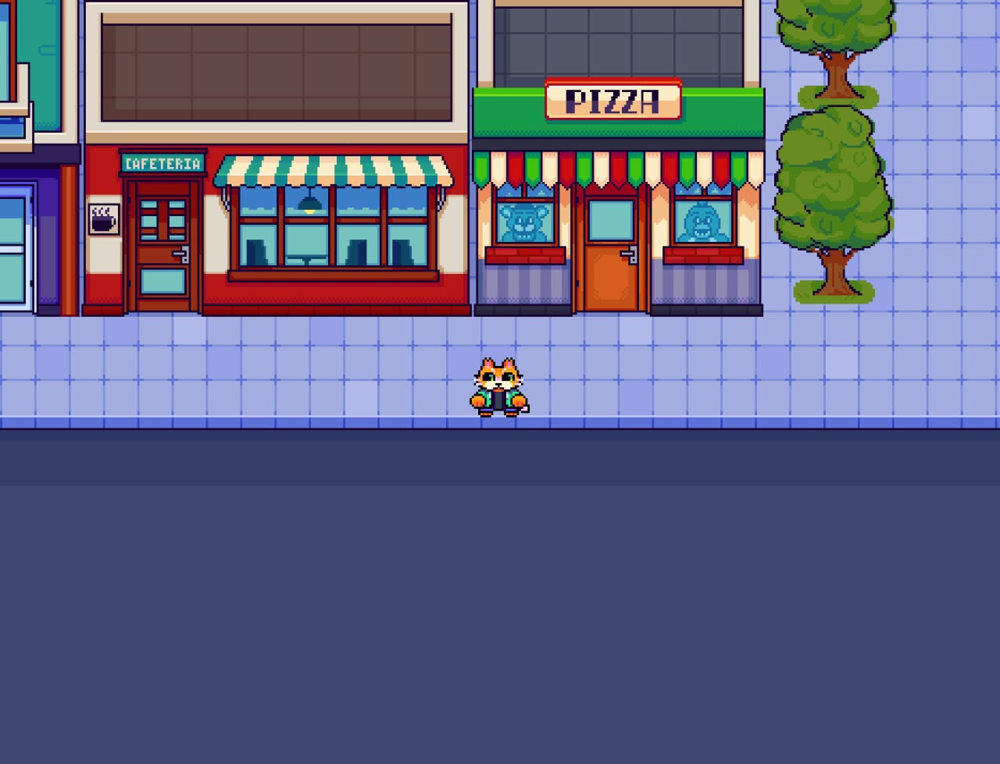
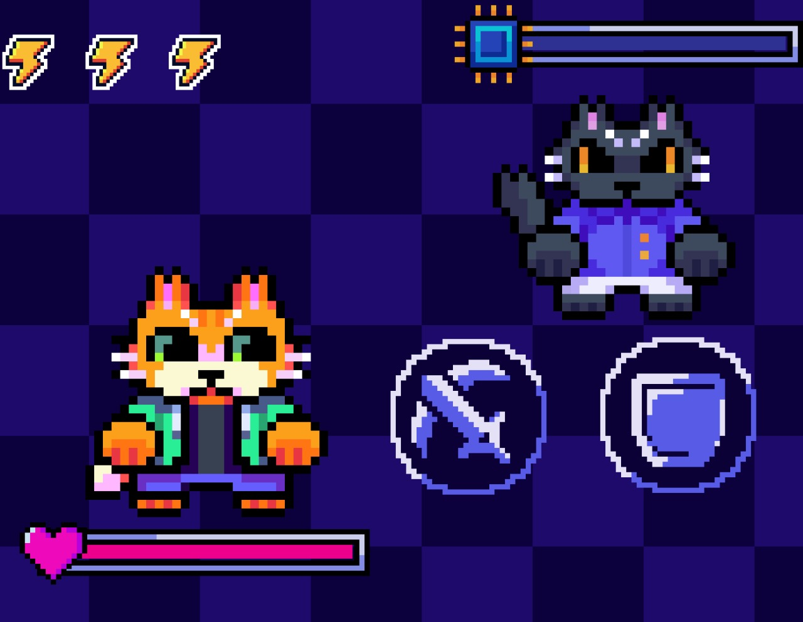

INTRODUÇÃO
A Inteligência Artificial (IA) é uma forma de softwares que reproduzem as ações dos seres humanos de acordo com o que foram alimentadas (Estrada, 2017). Segundo a Academia Brasileira de Artes, “para a IA conseguir gerar essas imagens com precisão, seus algoritmos foram treinados a partir de conjuntos de figuras, ilustrações e obras artísticas disponíveis online” (ABRA, 2023). Já que IAs não podem criar do zero, muitas pessoas consideram a arte de IAs um roubo.
Este presente estudo é um jogo 2D estilo Role-Playing Game (RPG) de turno top-down, que utiliza as ferramentas como GameMaker Studio 2 e LibreSprite para fazer uma experiência educativa com os objetivos de demonstrar a influência de jogos em conscientizar, ensinar e advertir sobre o uso de IAs.
PROCEDIMENTOS METODOLÓGICOS
Foi iniciado uma pesquisa sobre engines. Foi escolhido o GameMaker Studio 2, uma engine que contém linguagem própria, o Language Code. O GameMaker Studio 2 também trabalha com os gráficos desejados de 2D.
Também foi utilizado o LibreSprite, um editor de Pixel Art Open Source gratuito, usado para fazer todos os elementos gráficos do jogo.
RESULTADOS E DISCUSSÃO
Primeiramente, foi criado um roteiro, em seguida, foi desenvolvido um mapa e então introduzido inimigos.
Figura 1 - Tela do primeiro mapa  Fonte: os autores (2024).
O jogo atua com estilo mundo aberto 2D, dá a liberdade para quem joga de explorar o mapa. Durante a jornada, a personagem encontra inimigos para batalhar que o jogador terá que derrotar.
Figura 2 - Tela de batalha  Fonte: os autores (2024).
CONSIDERAÇÕES FINAIS
O trabalho tem como proposta apresentar um jogo RPG 2D de turno com a motivação de conscientizar o jogador sobre IAs e apresentar os principais feitos do projeto.
Até o momento foi concluída a pesquisa sobre IAs, a criação de uma história para a personagem, a criação de batalhas, Non-Playable Characters e o desenvolvimento de uma parte do jogo, assim se tendo um protótipo funcional.
Contudo, ainda há etapas que tem de ser concluídas no projeto, como cutscenes, novos mapas e inimigos com mecânicas mais complexas.
REFERÊNCIAS
ESTRADA, Manuel Martin Pino. INTELIGÊNCIA ARTIFICIAL E DESEMPREGO. Porto Alegre. Direito & TI, 2017. Disponível em: https://www.direitoeti.com.br/direitoeti/article/view/82/80. Acesso em: 22 de ago. 2024.
Inteligência artificial: qual impacto pode causar nas artes? Disponível em: https//abra.com.br/artigos/inteligencia-artificial-qual-impacto-pode-causar-nas-arte. Acesso em: 23 ago. 2024.